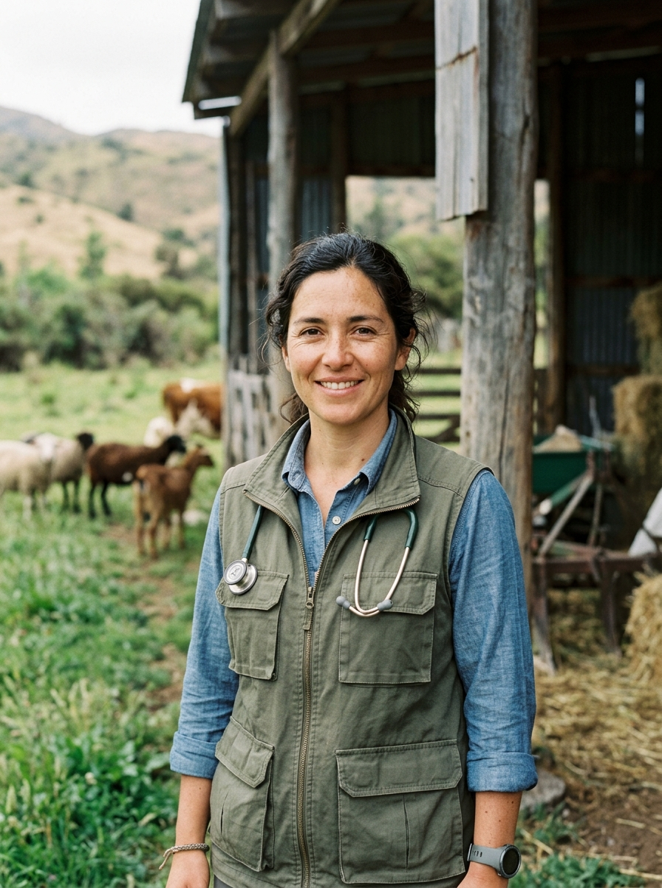
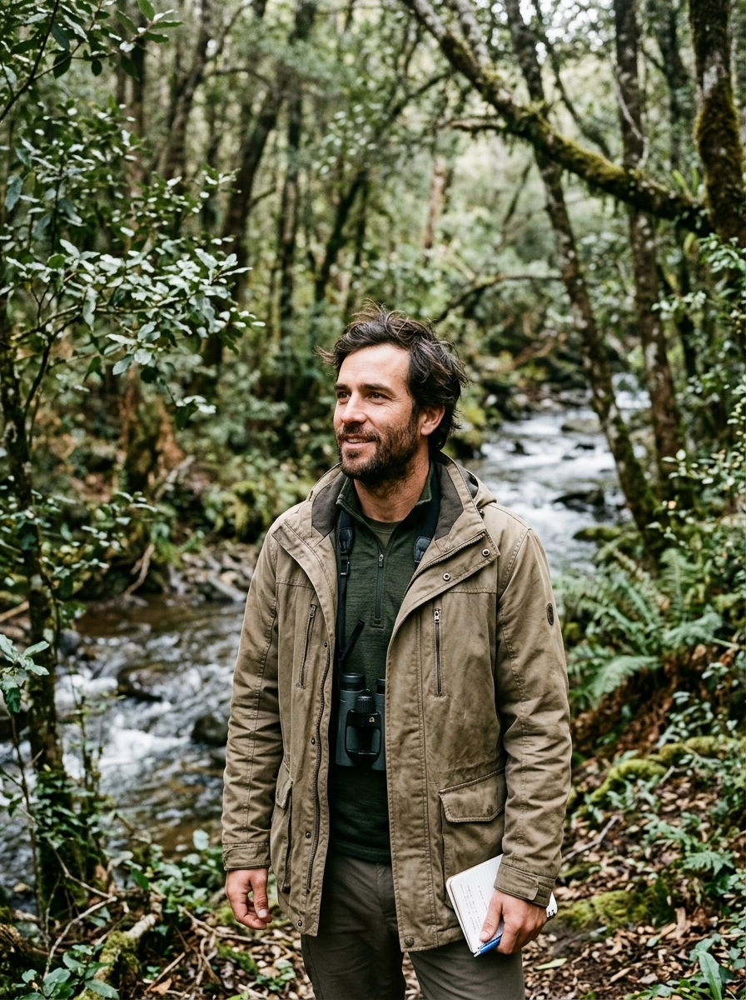

🐂
Consejo Consultivo IA • Establo Twin (Ganadería PRV)
3 EXPERTOS IAManejo Regenerativo: Pastoreo Racional Voisin, Sanidad Natural SAG y Coexistencia

Dra. Javiera Montecinos
Médico Veterinaria Holística SAG
"Sanidad preventiva de rebaño con fitofármacos y ajo silvestre. 100% libre de antibióticos sintéticos y DIIO oficial SAG."
• HPG Coprológico: <100 (Bajo)
• Condición Corporal: 3.75 / 5.0
• Condición Corporal: 3.75 / 5.0
Don Gastón Fuenzalida
Maestro de Pastoreo Voisin (PRV)
"Punto Óptimo de Reposo en 8 potreros. Carga animal de 180 UGM/ha/d con 18h de ocupación para máximo rebrote."
• Forraje Disponible: 2.850 kg MS/ha
• Aprovechamiento: 86% sin pisoteo
• Aprovechamiento: 86% sin pisoteo

Ignacio Subercaseaux
Coexistencia Rebaño-Fauna
"Cero bajas por depredación mediante mastines guardianes y luces Foxlights en cerco limítrofe con bosque nativo."
• Tasa Depredación: 0.0%
• Eficacia Mastines: 98.5%
• Eficacia Mastines: 98.5%